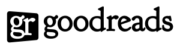

Brand Identity
Logo
The GoodReads logo is at the the heart of all visual communication aimed at the consumer. For simplicity and consistency, it should only be used with two colors: Primary Blue (#124147) and white or black and white.
Primary Logo
Primary Logo Reversed
Black and White Logo
Black and White Logo Reversed
Color
The color blue is our greatest distinguishing feature. It's an essential part of our brand identity. Salmon as an accent color adds vitality and warmth.
Primary Blue (#124147)
Secondary Blue (#73AE96)
Accent Salmon (#FF645F)
Neutral Gray (#666666)
Background (#F2F2F2)
Typefaces
The Goudy font plays an important part in building the GoodReads brand in that it connects the content on the site to the “printed word”. Lato creates a perfect balance, with its clean, contemporary linear features.
Display Font:
Goudy Bookletter 1911
Normal 400
ABCDEFGHIJKLMNOPQRSTUVWXYZ
abcdefghijklmnopqrstuvwxyz
1234567890!?.,;’”
Header Font:
Sorts Mills Goudy
Normal 400 Italic
ABCDEFGHIJKLMNOPQRSTUVWXYZ
abcdefghijklmnopqrstuvwxyz
1234567890!?.,;’”
Body Copy Font:
Lato
Normal 400
ABCDEFGHIJKLMNOPQRSTUVWXYZ
abcdefghijklmnopqrstuvwxyz
1234567890!?.,;’”
Visual Layout
Book Images
All book images should be 70 pixels wide. This allows for the optimal number of books on any given page while still appropriately featuring the cover artwork.
Word Clouds
Word clouds are a primary design element on the page. They evoke the magic of literature as well as personalize the experience of the user. Tints and shades may be applied to words to provide depth and dimension but deviation from the brand color palette is discouraged.
Tabs
A fundamental method for a user to navigate the site is through the use of tabs. They should be constructed from div elements styled with a 1 pixel solid Secondary Blue border, Lato text in Primary Blue. The currently active tab should be filled with a Secondary Blue background color, Lato text in white (#FFFFFF).
See the Pen EVEXgB by Jay Hollinsworth (@jhollinsworth) on CodePen.
Links
The hover and active states of all links should be styled with the Accent Salmon color.
See the Pen ZbxyvZ by Jay Hollinsworth (@jhollinsworth) on CodePen.